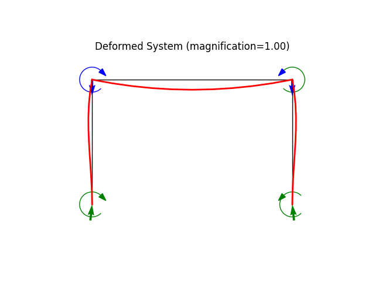
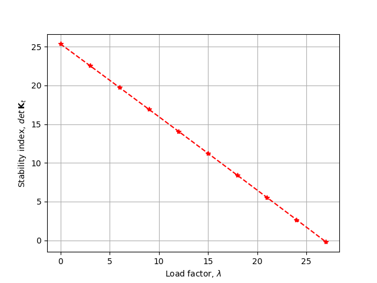

Note
Go to the end to download the full example code
Buckling of a building frame
modeled using a 2D frame element
N = 2 |
number of elements |
L = 100.0 |
column length |
EA = 2000000.0 |
axial stiffness |
EI = 21000.0 |
flexural stiffness |
w = 0.1 |
applied lateral load |
Author: Peter Mackenzie-Helnwein
import matplotlib.pyplot as plt
from femedu.examples.Example import *
from femedu.domain import *
from femedu.solver.NewtonRaphsonSolver import *
from femedu.elements.finite.Frame2D import *
from femedu.materials.ElasticSection import *
class ExampleFrame03(Example):
def problem(self):
# initialize a system model
N = 8 # number of elements
B = 240.
H = 200.
E = 29000.0
A = 20.0
I = 10.0
w = 1.0
load_at_nodes_only = False # set to True to apply equivalent nodal forces and moments
Ph = 0.01 # additional horizontal load per floor
Ph = 0.10 # additional horizontal load per floor
Ph = 1.00 # additional horizontal load per floor
Ph = 0.00 # additional horizontal load per floor
# ========== setting global parameters ==============
target_load_level = 27
max_steps = 10
load_levels = np.linspace(0, target_load_level, max_steps)
# ========= build your structural model =============
model = System()
model.setSolver(NewtonRaphsonSolver())
x0 = 0.0
x1 = B / 3
x2 = 2 * B / 3
x3 = B
y0 = 0.0
y1 = H / 4
y2 = 2 * H / 4
y3 = 3 * H / 4
y4 = H
X10 = Node(x0, y0)
X11 = Node(x0, y1)
X20 = Node(x1, y0)
X21 = Node(x1, y1)
model.addNode(X10,X11)
model.addNode(X20,X21)
# columns
params = {'E': E, 'A': A, 'I': I}
C11 = Frame2D(X10, X11, ElasticSection(params))
C21 = Frame2D(X20, X21, ElasticSection(params))
model.addElement(C11,C21)
# floors
params = {'E': E, 'A': A, 'I': 8*I}
F11 = Frame2D(X11, X21, ElasticSection(params))
model.addElement(F11)
# fixities
X10.fixDOF('ux','uy','rz') # fixed
X20.fixDOF('ux','uy','rz') # fixed
# reference load
#Pcr = np.pi**2 * EI / L**2
model.resetLoad() # size load vector and initialize
#model.addLoad(Xn, -Pcr, dof=0) # add a horizontal force (first dof only) ; remember C-style indexing: 0,1,...,(n-1)
if load_at_nodes_only:
# floor loading as nodal loads ...
Pe = w * B/3
Mi = w * (B/3)**2 /12
X11.addLoad([-Pe/2., -Mi],['uy','rz'])
X21.addLoad([-Pe/2., 0.],['uy','rz'])
else:
# floor loading as distributed loads ...
F11.setDistLoad(-w)
# wind load ...
X11.addLoad([Ph],['ux']) # horizontal load
# show model information
print(model)
print("\n==== perform the analysis ===\n")
# * apply the load in multiple smaller load steps
# set up data recorder
model.initRecorder()
model.trackStability(True)
# initialize the analysis:
model.resetDisplacements() # set U to all zeros
model.setLoadFactor(0.0) # define a known equilibrium solution
model.startRecorder()
detKt = []
lambdas = []
# solve for all load_levels
for loadfactor in load_levels:
# define node X2 as the controled node; downward direction is prescribed:
model.setLoadFactor(loadfactor)
model.solve(verbose=True)
# stability check
lambdas.append(model.loadfactor)
detKt.append(model.solver.checkStability())
# report results
print('+')
#model.report()
print("\n=== next load level ===\n")
#
# ==== create some nice plots ===
#
model.report()
model.plot(factor=1.0, filename="frame3_deformed.png", show_loads=1, show_reactions=1)
fig, ax = plt.subplots()
ax.plot(lambdas,detKt,'--*r')
ax.grid(True)
ax.set_xlabel('Load factor, $ \lambda $')
ax.set_ylabel("Stability index, $ {det}\: {\\bf K}_t $")
fig.savefig("frame3_stability.png")
fig.show()
model.beamValuePlot("F", filename="frame3_force.png")
model.beamValuePlot("V", filename="frame3_shear.png")
model.beamValuePlot("M", filename="frame3_moment.png")
model.plotBucklingMode(factor=25., filename="frame3_buckling_mode0.png")
Run the example by creating an instance of the problem and executing it by calling Example.run()
if __name__ == "__main__":
ex = ExampleFrame03()
ex.run()
- 
- 

System object
Node_195(x=[0. 0.], u=None)
Node_196(x=[ 0. 50.], u=None)
Node_197(x=[80. 0.], u=None)
Node_198(x=[80. 50.], u=None)
Frame2D(Node_195, Node_196, ElasticSection(Material)({'E': 29000.0, 'A': 20.0, 'I': 10.0, 'nu': 0.0, 'fy': 1e+30}))
Frame2D(Node_197, Node_198, ElasticSection(Material)({'E': 29000.0, 'A': 20.0, 'I': 10.0, 'nu': 0.0, 'fy': 1e+30}))
Frame2D(Node_196, Node_198, ElasticSection(Material)({'E': 29000.0, 'A': 20.0, 'I': 80.0, 'nu': 0.0, 'fy': 1e+30}))
==== perform the analysis ===
norm of the out-of-balance force: 0.0000e+00
** Stability check: (smallest 1 eigenvalues of Kt)
mode 0: 25.36
+
** Stability check: (smallest eigenvalue of Kt) = 25.362866066892394
+
=== next load level ===
norm of the out-of-balance force: 2.2691e+03
norm of the out-of-balance force: 2.7690e+01
norm of the out-of-balance force: 2.5832e-02
norm of the out-of-balance force: 5.8606e-05
norm of the out-of-balance force: 1.3304e-07
** Stability check: (smallest 1 eigenvalues of Kt)
mode 0: 22.55
+
** Stability check: (smallest eigenvalue of Kt) = 22.553344322698855
+
=== next load level ===
norm of the out-of-balance force: 2.2691e+03
norm of the out-of-balance force: 5.7335e+01
norm of the out-of-balance force: 1.0732e-01
norm of the out-of-balance force: 4.9127e-04
norm of the out-of-balance force: 2.2490e-06
norm of the out-of-balance force: 1.0102e-08
** Stability check: (smallest 1 eigenvalues of Kt)
mode 0: 19.74
+
** Stability check: (smallest eigenvalue of Kt) = 19.736675218770774
+
=== next load level ===
norm of the out-of-balance force: 2.2691e+03
norm of the out-of-balance force: 8.9173e+01
norm of the out-of-balance force: 2.5073e-01
norm of the out-of-balance force: 1.7372e-03
norm of the out-of-balance force: 1.2036e-05
norm of the out-of-balance force: 8.3344e-08
** Stability check: (smallest 1 eigenvalues of Kt)
mode 0: 16.91
+
** Stability check: (smallest eigenvalue of Kt) = 16.91257943489863
+
=== next load level ===
norm of the out-of-balance force: 2.2691e+03
norm of the out-of-balance force: 1.2348e+02
norm of the out-of-balance force: 4.6258e-01
norm of the out-of-balance force: 4.3136e-03
norm of the out-of-balance force: 4.0225e-05
norm of the out-of-balance force: 3.7531e-07
** Stability check: (smallest 1 eigenvalues of Kt)
mode 0: 14.08
+
** Stability check: (smallest eigenvalue of Kt) = 14.080761870683443
+
=== next load level ===
norm of the out-of-balance force: 2.2691e+03
norm of the out-of-balance force: 1.6058e+02
norm of the out-of-balance force: 7.4959e-01
norm of the out-of-balance force: 8.8231e-03
norm of the out-of-balance force: 1.0385e-04
norm of the out-of-balance force: 1.2225e-06
norm of the out-of-balance force: 1.4385e-08
** Stability check: (smallest 1 eigenvalues of Kt)
mode 0: 11.24
+
** Stability check: (smallest eigenvalue of Kt) = 11.240910493712873
+
=== next load level ===
norm of the out-of-balance force: 2.2691e+03
norm of the out-of-balance force: 2.0086e+02
norm of the out-of-balance force: 1.1185e+00
norm of the out-of-balance force: 1.5960e-02
norm of the out-of-balance force: 2.2773e-04
norm of the out-of-balance force: 3.2491e-06
norm of the out-of-balance force: 4.6476e-08
** Stability check: (smallest 1 eigenvalues of Kt)
mode 0: 8.39
+
** Stability check: (smallest eigenvalue of Kt) = 8.392695084555516
+
=== next load level ===
norm of the out-of-balance force: 2.2691e+03
norm of the out-of-balance force: 2.4477e+02
norm of the out-of-balance force: 1.5757e+00
norm of the out-of-balance force: 2.6511e-02
norm of the out-of-balance force: 4.4606e-04
norm of the out-of-balance force: 7.5050e-06
norm of the out-of-balance force: 1.2627e-07
** Stability check: (smallest 1 eigenvalues of Kt)
mode 0: 5.54
+
** Stability check: (smallest eigenvalue of Kt) = 5.535765867200808
+
=== next load level ===
norm of the out-of-balance force: 2.2691e+03
norm of the out-of-balance force: 2.9285e+02
norm of the out-of-balance force: 2.1268e+00
norm of the out-of-balance force: 4.1357e-02
norm of the out-of-balance force: 8.0422e-04
norm of the out-of-balance force: 1.5639e-05
norm of the out-of-balance force: 3.0400e-07
** Stability check: (smallest 1 eigenvalues of Kt)
mode 0: 2.67
+
** Stability check: (smallest eigenvalue of Kt) = 2.669752012635755
+
=== next load level ===
norm of the out-of-balance force: 2.2691e+03
norm of the out-of-balance force: 3.4574e+02
norm of the out-of-balance force: 2.7763e+00
norm of the out-of-balance force: 6.1460e-02
norm of the out-of-balance force: 1.3605e-03
norm of the out-of-balance force: 3.0118e-05
norm of the out-of-balance force: 6.6657e-07
** Stability check: (smallest 1 eigenvalues of Kt)
mode 0: -0.21
+
** Stability check: (smallest eigenvalue of Kt) = -0.20573999904608956
+
=== next load level ===
System Analysis Report
=======================
Nodes:
---------------------
Node_195:
x: [0. 0.]
fix: ['ux', 'uy', 'rz']
u: [0. 0. 0.]
Node_196:
x: [ 0. 50.]
u: [ 0.00807668 -0.09310345 -0.20194602]
Node_197:
x: [80. 0.]
fix: ['ux', 'uy', 'rz']
u: [0. 0. 0.]
Node_198:
x: [80. 50.]
u: [-0.00807668 -0.09310345 0.20194602]
Elements:
---------------------
Frame2D_306: nodes ( Node_195 Node_196 )
material: ElasticSection
internal forces: f0=-1080.00 V0=-117.11 M0=2842.69 fl=-1080.00 Vl=-117.11 Ml=-3004.18 Pw=0.00 Mw=0.00
Frame2D_307: nodes ( Node_197 Node_198 )
material: ElasticSection
internal forces: f0=-1080.00 V0=117.11 M0=-2842.69 fl=-1080.00 Vl=117.11 Ml=3004.18 Pw=0.00 Mw=0.00
Frame2D_308: nodes ( Node_196 Node_198 )
material: ElasticSection
internal forces: f0=-117.11 V0=0.00 M0=11395.82 fl=-117.11 Vl=0.00 Ml=11395.82 Pw=-1080.00 Mw=-14400.00
Total running time of the script: (0 minutes 0.871 seconds)